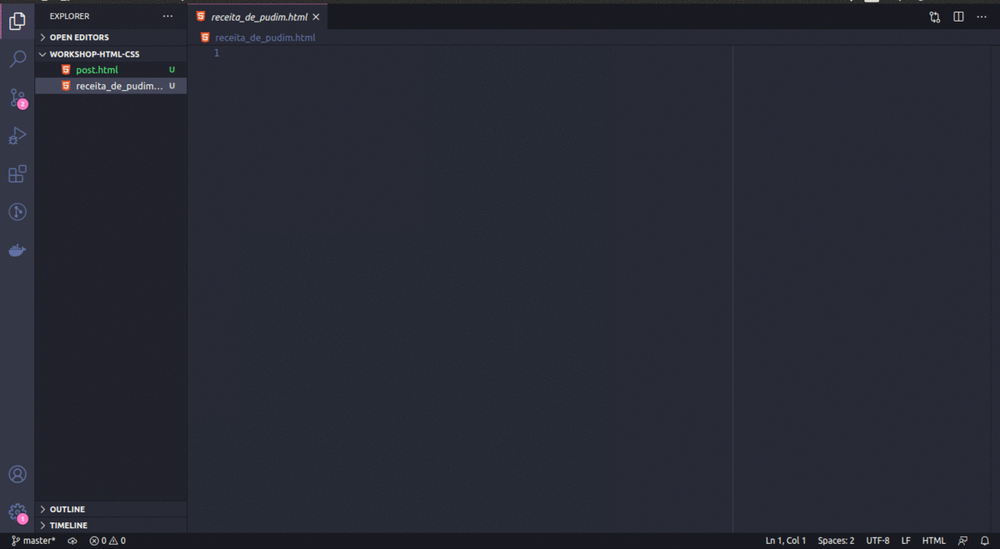
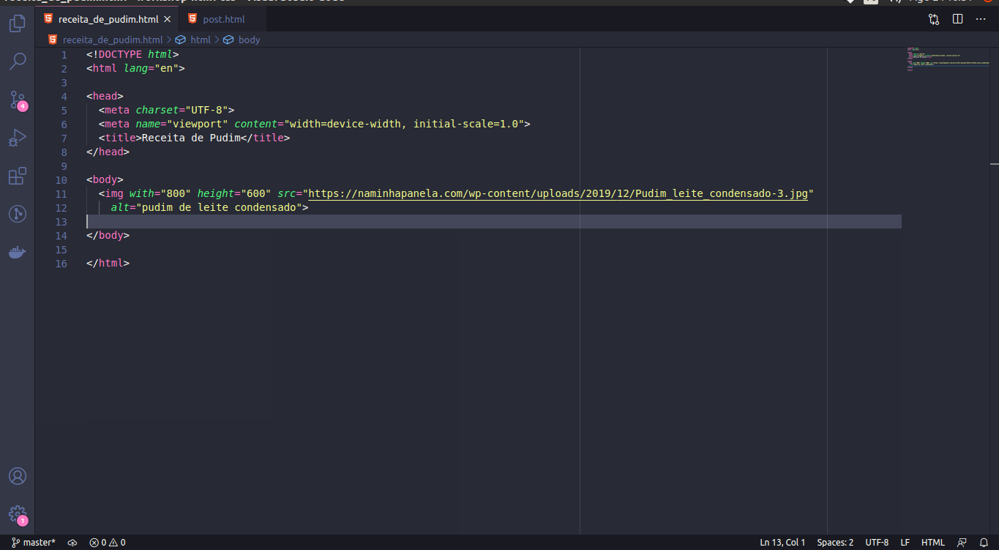
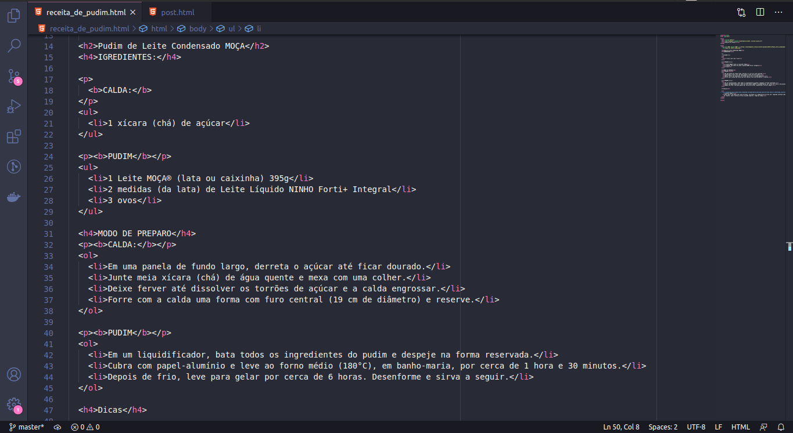
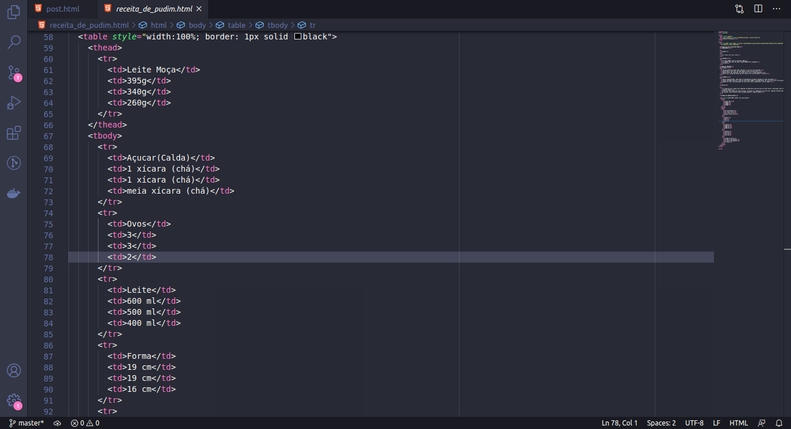

Prática 01
O que nós vamos fazer?
Vamos criar uma página HTML mostrando como fazer um delicioso Pudim! 😜. Eu sei, é algo super simples, mas vai exercitar algumas tags que nós já aprendemos. Todo mundo começa do mais simples para o mais complexo, então vamos com calma.
Chega de conversa e lets que lets. Abra o Visual Studio Code, crie um arquivo HTML com o nome que você quiser e salve em algum lugar no teu PC. O meu vai ser receita_de_pudim.html
Com o arquivo aberto digite exclamação e depois aperte tab e veja a mágica que o VS Code vai fazer:
O VS Code criou a estrutura básica que todo HTML precisa para iniciar uma página. No Título vamos mudar para Receita de Pudim. Importante dizer que o VS Code tem muitos atalhos de teclado que vão te ajudar muito no dia a dia de desenvolvimento, quanto mais você usar mais produtivo você será. No HTML, toda vez que você criar uma tag é só digitar o nome da tag e apertar tab. Por exemplo, digite "p" (sem as aspas) e aperte tab e veja a mágica.
OBS: Dan, por que seu VS Code tem post.html? post.html é essa página que você está lendo, eu pretendo fazer os exercícios em formato de blog post então é isso, eu resolvi criar os exercícios escrevendo as instruções em uma página HTML, fica bem mais fácil.
- Dan, e essa tag meta com name="viewport", o que é isso? Calma, vamos conversar sobre isso nas próximas aulas, mas é essa tag que permite que essa página se adapte a resoluções de tela de smartphone.
- E esse UTF-8 o que é? Isso permite que você use caracteres com acento e Ç, experimente escrever um Ç sem usar o UTF-8 e veja o que acontece.
Toda receita começa (ou deveria começar) com uma foto ou vídeo para incentivar a pessoa a fazer. A pessoa tem que pensar olhando a foto: Olha só que pudim bonito, pudim bem feito, pudim formoso, vou fazer! Então nós vamos procurar uma foto no Google, pegue a foto do pudim mais bonito que você encontrar e adicione logo no início.
Eu peguei uma foto enorme e meu pudim ocupou muito da minha tela, então eu usei o width e o height para ajustar largura e altura da imagem. E o que significa esse alt na imagem?
Quais os tipos de títulos no HTML e qual a diferença de cada um? É bem simples, a diferença é só o tamanho de cada um. Olha essa referência
Próximo passo: Título da receita, afinal tem muitos tipos de pudim. Vou usar o
h2 Pudim de Leite Condensado MOÇA
agora os igredientes: vou usar o h4 para criar o título da seção que vai se chamar INGREDIENTES. Temos lista para a calda e uma para o pudim. então vamos listar os dois. O HTML já tem as tags para lista, então vamos criar duas listas não ordenadas
CALDA:
- 1 xícara (chá) de açúcar
PUDIM
- 1 Leite MOÇA® (lata ou caixinha) 395g
- 2 medidas (da lata) de Leite Líquido NINHO Forti+ Integral
- 3 ovos
Vamos para o modo de preparo. Vou usar o h4 para criar o título da seção que vai se chamar MODO DE PREPARO.
Novamente temos a calda e o pudim. Vamos criar uma lista ordenada para o modo de preparo, afinal se você não fizer
na ordem vai dar ruim, tipo aquelas receitas
expectativa vs realidade:
Então vamos lá:
Calda:
- Em uma panela de fundo largo, derreta o açúcar até ficar dourado.
- Junte meia xícara (chá) de água quente e mexa com uma colher.
- Deixe ferver até dissolver os torrões de açúcar e a calda engrossar.
- Forre com a calda uma forma com furo central (19 cm de diâmetro) e reserve.
Pudim:
- Em um liquidificador, bata todos os ingredientes do pudim e despeje na forma reservada.
- Cubra com papel-alumínio e leve ao forno médio (180°C), em banho-maria, por cerca de 1 hora e 30 minutos.
- Depois de frio, leve para gelar por cerca de 6 horas. Desenforme e sirva a seguir.
Vamos criar uma seção de dicas para ajudar o leitor a acertar e criar o melhor pudim da vida dele. Vou criar com um h4
Dicas
seguido de uma lista não ordenada com as informações:
- É essencial que o pudim seja preparado em banho-maria para que asse de forma lenta e controlada, para atingir a textura ideal.
- Para que o seu pudim não forme furinhos, verifique se a temperatura do forno está regulada conforme indicação da receita. Leve a forma ao forno na grade superior, longe da chama.
Veja como ficou até agora:
Usei a TAG b para colocar fonte negrito onde eu queria, fica sua decisão usar ou não.
Para finalizar vamos criar uma tabela de equivalências já que existem potes de leite moça com diferentes quantidades. Precisamos saber como seria as quantidades se o pote fosse de 395g ou 340g ou 260g
| Leite Moça | 395g | 340g | 260g |
| Açucar(Calda) | 1 xícara (chá) | 1 xícara (chá) | meia xícara (chá) |
| Ovos | 3 | 3 | 2 |
| Leite | 600 ml | 500 ml | 400 ml |
| Forma | 19 cm | 19 cm | 16 cm |
| Tempo de Forno | 1 hora e 30 minutos | 1 hora e 30 minutos | 1 hora |
O que significa cada tag da tabela?
- table: define que é uma tabela (OK, fácil)
- thead: table head, define o cabeçalho de uma tabela
- tbody: table body, define o corpo de uma tabela
- tr: table row, define uma linha de uma tabela, no nosso caso 6 linhas, logo serão 6 tr
- td: table data, define uma célula da tabela, dentro de cada linha (tr) tem algumas td. Com 6 linhas e 4 colunas, temos 24 td
Nosso cabeçalho é a primeira linha da tabela. Então dentro do thead tem um tr e dentro do tbody tem as outras 5 tr
Dá uma olhada nesse HTML para entender a estrutura e logo depois tenta fazer a tabela.
Claro você pode só abrir o código fonte desse post e pegar a tabela que eu fiz ou olhar o print abaixo, mas aí você não aprenderá nada no processo. Sempre tente fazer antes de olhar a resposta!
Veja como ficou:
Criar tabelas é meio demorado e um pouco difícil de entender no início, tem várias tags, mas lets que lets, qualquer dúvida estamos por aí.
Desafio super simples:
Coloque um pouco de estilo na sua tabela, defina uma borda e coloque tamanhos diferentes em cada coluna
Use essa referência

Com isso nós usamos as estruturas de texto, tanto parágrafo quanto título; lista, tanto ordenada como não ordenada; tabela e imagens